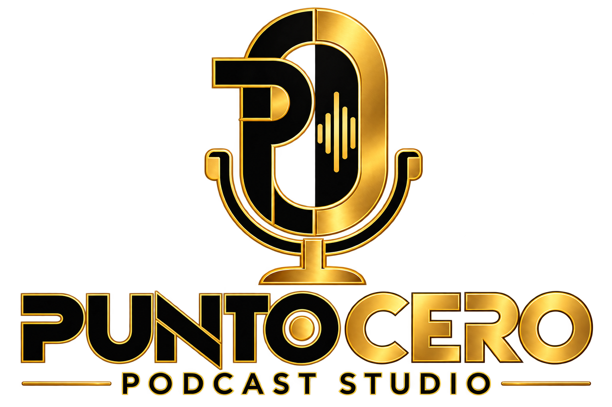
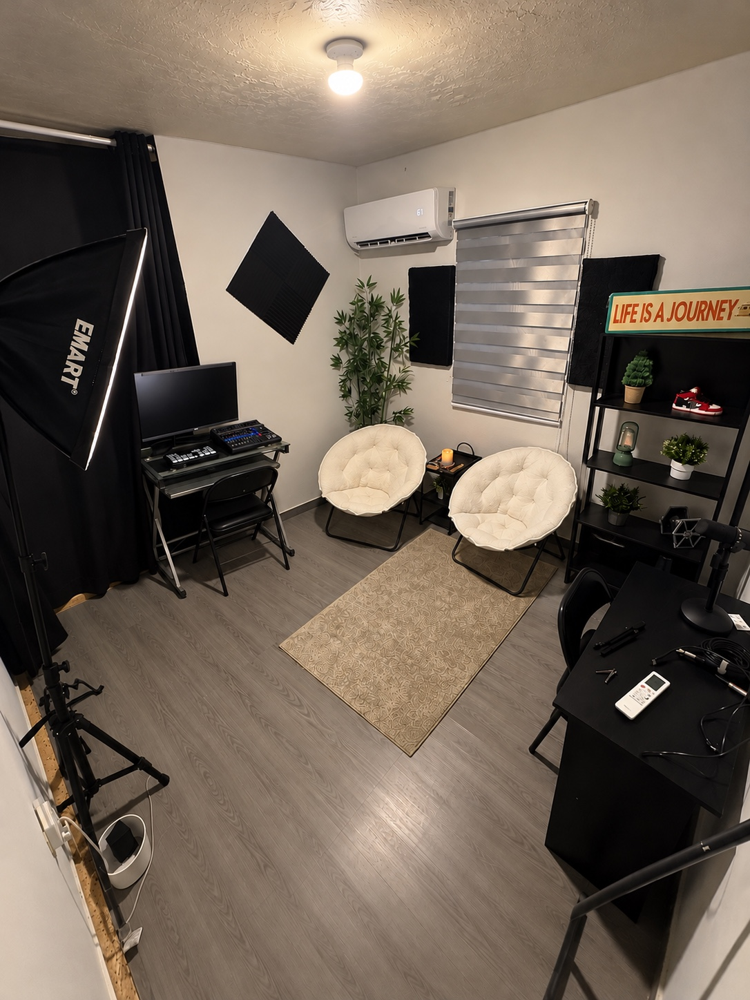

01 · ACCESIBLE
Cerca de tu comunidad
Ubicado en Hatillo para atender a creadores que buscan un lugar equipado sin tener que trasladarse lejos.
Un espacio creativo y accesible para grabar podcasts con calidad profesional, apoyo técnico y la comodidad de sentirte en tu propio ambiente.

Punto Cero elimina la barrera técnica y de espacio para que creadores nuevos puedan concentrarse en sus ideas y conversaciones.
Ubicado en Hatillo para atender a creadores que buscan un lugar equipado sin tener que trasladarse lejos.
Micrófonos, cámaras, iluminación y sistema técnico preparados antes de cada sesión.
Una operación pequeña, organizada y realista que irá sumando servicios según la demanda.
Paquetes diseñados alrededor de lo que realmente necesita cada creador durante su sesión.
Para creadores que ya manejan su propia edición.
Para principiantes o clientes que prefieren apoyo técnico.
La inversión inicial se concentra en operar y mantener el espacio porque gran parte del equipo ya está disponible.
Dos micrófonos con brazos para una conversación cómoda y organizada.
Sistema de producción para conectar y manejar cámaras y fuentes de audio.
Recursos de iluminación para mantener una imagen clara y consistente.
Cables, sillas, mobiliario básico, computadora y recursos de cámara.

Este es el espacio que servirá como base de Punto Cero. Su distribución permite organizar el área de conversación, la iluminación y la parte técnica dentro de un ambiente acogedor.
Un proceso sencillo para que el cliente sepa qué esperar antes, durante y después de la sesión.
Selecciona el tipo de sesión y confirma la disponibilidad del estudio.
Llega con tu contenido; el espacio y el equipo estarán preparados.
Obtén los archivos digitales correspondientes al paquete seleccionado.
Al comenzar, una o dos personas pueden asumir varias funciones. Dividir las áreas permite trabajar con orden y saber qué delegar en el futuro.
Visión, decisiones, alianzas y supervisión.
Preparación técnica y mantenimiento.
Promoción, reservaciones y servicio.
Cobros, gastos, contratos y presupuesto.
Área futura de edición y crecimiento.
Punto Cero estará disponible por cita para podcasters, creadores de contenido y personas que quieran comenzar un proyecto cerca de sus comunidades.
Contacto: marlonlopezdelrio@gmail.com